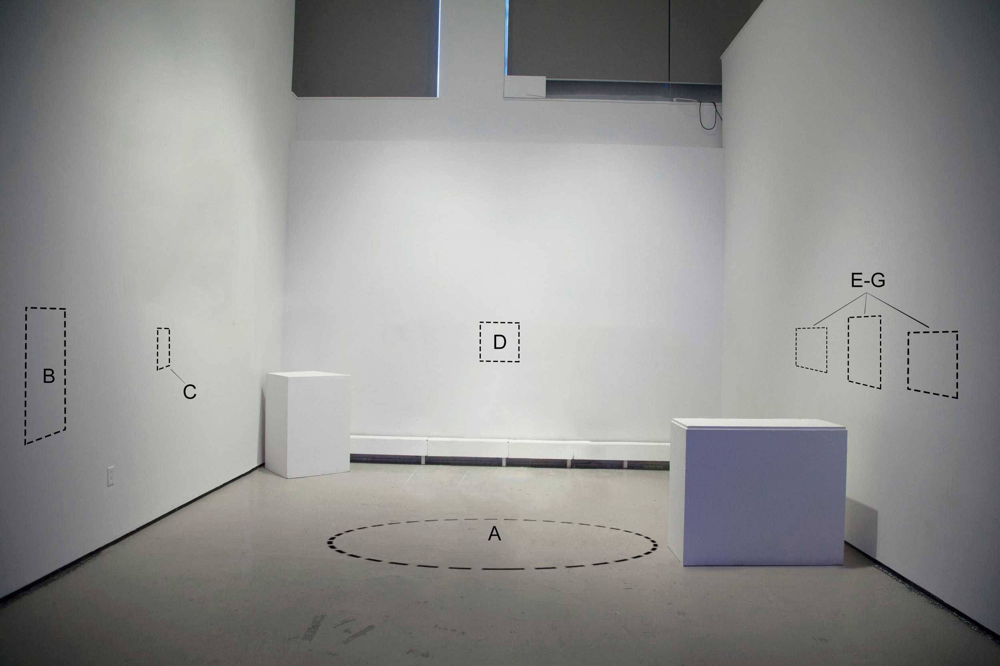

Installation Plan

Figure 1. Installation plan superimposed onto a photograph of the mezzanine space at the Yale School of Art Gallery. A.) Nzi Trap
sculpture. B.) Statement pamphlets. C.) Entanglement Catalyst
wall piece. D.) Latin Square
wall piece. E-G.) Pro-spectre (George Harrison)
series. Boxes would be removed before installation. Not pictured: stairwell behind right wall leading to a bird’s-eye-view landing.
Rinderpest Collectif consists of six works, each produced by creative intervention on a readymade form. The installation was initially designed to fill the School of Art’s mezzanine gallery beneath the elevated ceiling section, a 16-foot square area with three walls. One can view the space from above (from the top landing of a staircase behind the space’s right wall), or by turning to the right while descending from the first floor to the School of Art’s basement gallery (latter perspective pictured in fig 1).
Nzi Trap (fig. 1, A) will stand in the center of the gallery space. The sculpture is a scale replica of a device used by ecologists, public health officials, and herds people throughout East Africa to limit the spread of sleeping sickness by regulating populations of its vector, the tsetse fly.1 Measuring approximately six feet tall with an eight by four foot base, it is composed of sewn white mesh fabric and phthalo blue and black Indian silk strung between three stands. Each stand will consist of a tall stick grounded in a concrete base. I will conceal each base with a mound of soil. Following a design convention used to prevent ants from accessing the trap, I will coat the base of each stick with calcium sulfonate grease where it emerges from the soil. Gomutra (urine collected from the Zebu cow), purchased from an online ayurveda retailer, will be mixed into the soil. The smell of this urine is intended to emanate from the trap and fill the gallery with a perceptible, but faint, natural odor.
On the wall to the left of the trap will be a mounted acrylic case holding printed editions of my written statement (fig. 1, B). To the right of these statements will be the wall piece Entanglement Catalysts (fig. 1, C). The piece consists of the body of a tsetse fly, preserved in a capped vial in a 1:4 mixture of gomutra and acetone. When the gomutra in this formula is replaced with water, the mixture becomes a lab-grade preservation solution for arthropods.2 The vial will be fixed to the wall by a lab-grade, metallic utility clamp.
On the back wall I will hang the two feet by two feet famed Latin Square (fig. 1, D). In combinatorial mathematics, the term “latin square” is used to describe a square matrix of n length in which each row and column contain values 1 through n. Latin squares are used in scientific research to randomize sampling procedures, and were employed in the study that identified and optimized the tsetse fly trap liquid bait cocktail.3 The work Latin Square uses a ten by ten latin square matrix to randomly and evenly distribute fragments of satellite images from the United States Geological Survey’s Earth Explorer that depict the following sites:
i.) Massawa, Eritrea, where Italian colonial traders purportedly introduced the rinderpest virus to Africa in 1887;4
ii.) the Langlaagte neighborhood of Johannesburg South Africa, where, in 1886, prospector George Harrison discovered the gold vein that would fuel the subsumption of rinderpest-impacted Swazi migrant workers into a colonial, racial capitalist society, laying the groundwork for the city's early growth;
iii.) Johannesburg’s Settler’s Park, home to the George Harrison memorial statue;
iv.) the Nguruman escarpment, in Kenya, where the first tsetse fly traps were developed and implemented to fight the spread of sleeping sickness;
v.) and downtown New Haven, where Yale School of Public Health professor Dr. Serap Aksoy and Yale Ecology and Evolutionary researcher Dr. Adalgisa Caccone research tsetse fly biology and the trypanosomes that cause sleeping sickness.
On the wall to the right of Nzi Trap, the Pro-spectre (George Harrison) series will hang (fig. 1, E-G). The series contains three wall works using images of the George Harrison monument taken by South African native Darly Nkuna. Each image will be transferred to film, developed, fixed, and unwashed. Photographs will then be mounted to the inside of a one-inch deep, clear, waterproof acrylic display case, which will be filled with pure gomutra. Over the duration of the exhibition, the remaining traces of fixer chemicals will slowly deteriorate each image. The compounds present in the gomutra bath will potentially complicate, or catalyze, this process.
Notes
1 Brightwell R., et al., “A new trap for Glossina pallidipes,” Tropical Pest Management, 33, 1987, 151-189.
2 Fukatsu, Takema, “Acetone preservation: a practical technique for molecular analysis,” Molecular Ecology, 8, (1999) 1935-1945.
3 Brightwell, R. et al., “Odour attractants for tsetse: Glossina austeni, G.brevipalpis and Gswynnertoni,” Medical and Veterinary Entomology, 11, 1997, 297- 299.
4 Spinage, Clive A., “The Italian occupation of Massawa and the supposed origin of the African Rinderpest panzootic,” African Journal of Ecology, 55, 2017.
back